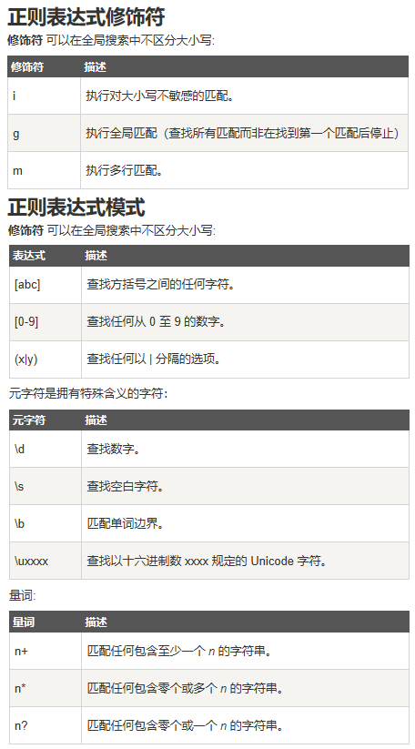

正则表达式（英语：Regular Expression，在代码中常简写为regex、regexp或RE）使用单个字符串来描述、匹配一系列符合某个句法规则的字符串搜索模式。
什么是正则表达式？正则表达式是由一个字符序列形成的搜索模式。当你在文本中搜索数据时，你可以用搜索模式来描述你要查询的内容。正则表达式可以是一个简单的字符，或一个更复杂的模式。正则表达式可用于所有文本搜索和文本替换的操作。
search() 方法 用于检索字符串中指定的子字符串，或检索与正则表达式相匹配的子字符串，并返回子串的起始位置。
replace() 方法 用于在字符串中用一些字符替换另一些字符，或替换一个与正则表达式匹配的子串。
test() 方法用于检测一个字符串是否匹配某个模式，如果字符串中含有匹配的文本返回Boolean类型。
exec() 方法用于检索字符串中的正则表达式的匹配。
